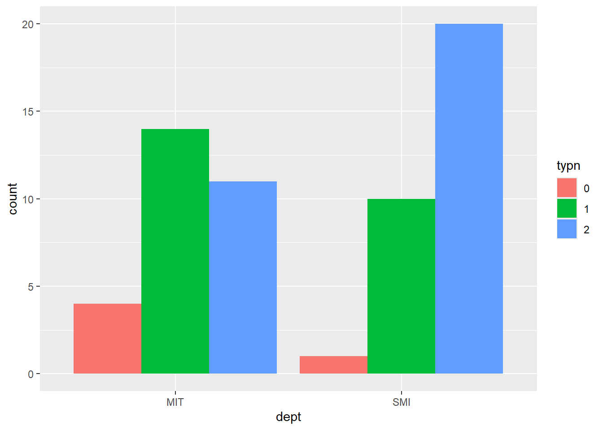
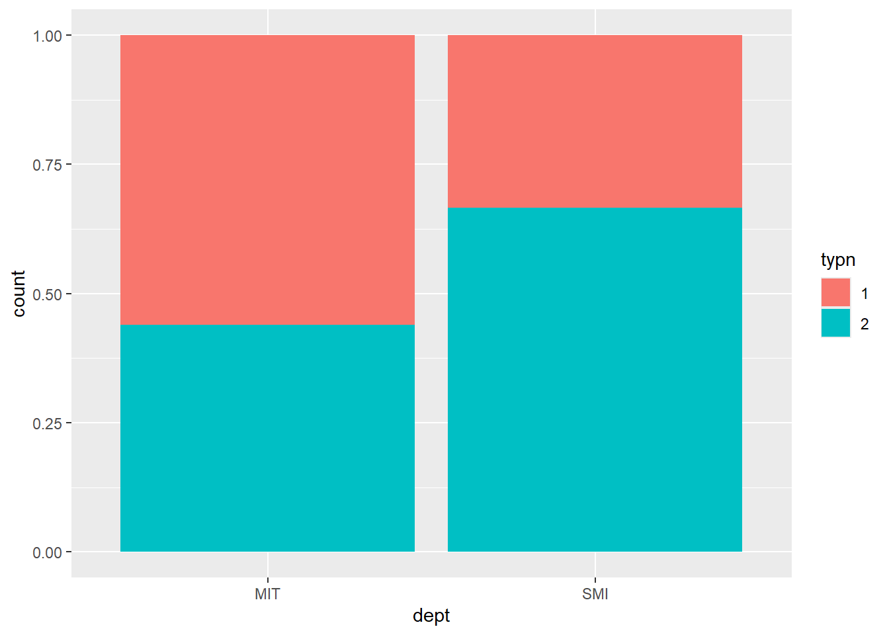
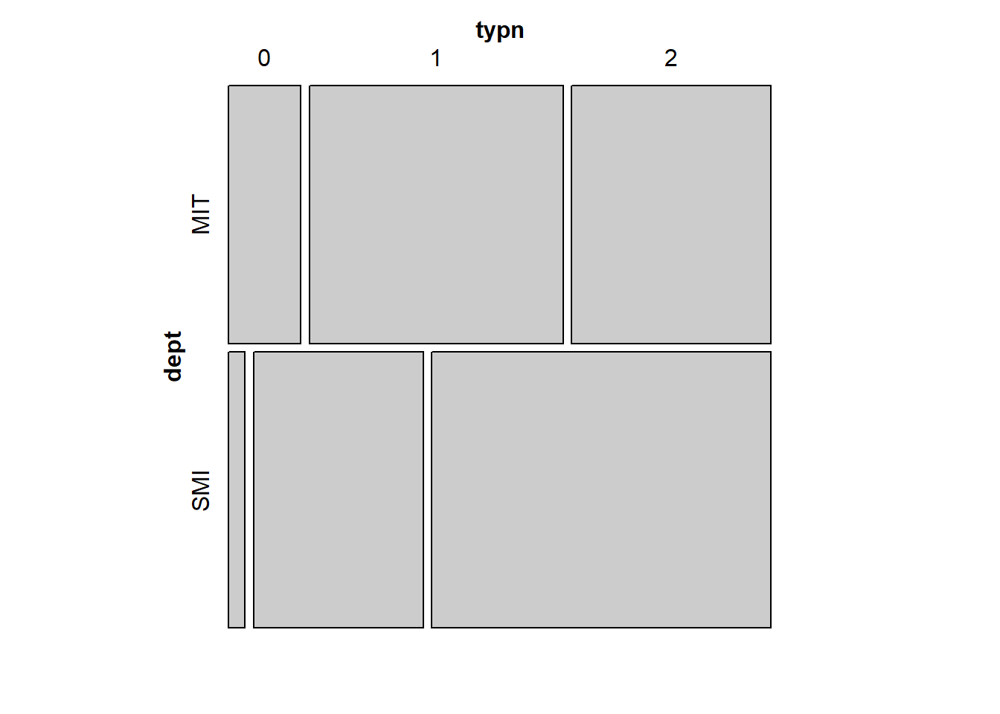
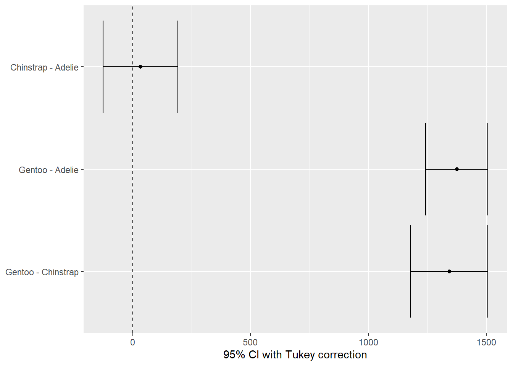

library(tidyverse)
library(mosaic)
library(skimr)
library(ggformula)
library(sf)
library(vcd)
library(supernova)
data <- read_csv("data/introextro.csv")final panel
dataM <- data %>%
mutate(dept = as.factor(dept), typn = as.factor(typn))
glimpse(dataM)Rows: 60
Columns: 4
$ sno <dbl> 1, 2, 3, 4, 5, 6, 7, 8, 9, 10, 11, 12, 13, 14, 15, 16, 17, 18, 19…
$ dept <fct> SMI, SMI, SMI, SMI, SMI, SMI, SMI, SMI, SMI, SMI, SMI, MIT, MIT, …
$ type <chr> "ENTP", "INTJ", "INFP", "INTP", "INFP", "INFP", "ISFP", "INFJ", "…
$ typn <fct> 1, 2, 2, 2, 2, 2, 2, 2, 2, 1, 1, 1, 2, 1, 2, 1, 1, 1, 0, 0, 1, 2,…view(dataM)
skim(dataM)| Name | dataM |
| Number of rows | 60 |
| Number of columns | 4 |
| _______________________ | |
| Column type frequency: | |
| character | 1 |
| factor | 2 |
| numeric | 1 |
| ________________________ | |
| Group variables | None |
Variable type: character
| skim_variable | n_missing | complete_rate | min | max | empty | n_unique | whitespace |
|---|---|---|---|---|---|---|---|
| type | 0 | 1 | 3 | 4 | 0 | 15 | 0 |
Variable type: factor
| skim_variable | n_missing | complete_rate | ordered | n_unique | top_counts |
|---|---|---|---|---|---|
| dept | 0 | 1 | FALSE | 2 | SMI: 31, MIT: 29 |
| typn | 0 | 1 | FALSE | 3 | 2: 31, 1: 24, 0: 5 |
Variable type: numeric
| skim_variable | n_missing | complete_rate | mean | sd | p0 | p25 | p50 | p75 | p100 | hist |
|---|---|---|---|---|---|---|---|---|---|---|
| sno | 0 | 1 | 30.5 | 17.46 | 1 | 15.75 | 30.5 | 45.25 | 60 | ▇▇▇▇▇ |
dataM |> gf_bar(~dept, fill = ~typn, position = "dodge")
dataM |> filter(typn != 0) |> gf_bar(~ dept, fill = ~typn, position = "fill")
vcd::mosaic(~dept + typn, data = dataM) 
dataM2 <- dataM |> filter(typn != 0) |> droplevels()
mosaic::xchisq.test(dept ~ typn, data = dataM2)
Pearson's Chi-squared test with Yates' continuity correction
data: x
X-squared = 2.0015, df = 1, p-value = 0.1571
14 11
(10.91) (14.09)
[0.62] [0.48]
< 0.94> <-0.82>
10 20
(13.09) (16.91)
[0.51] [0.40]
<-0.85> < 0.75>
key:
observed
(expected)
[contribution to X-squared]
<Pearson residual>aov(body_mass ~ species, data = penguins) |> supernova::supernova()Refitting to remove 2 cases with missing value(s)
ℹ aov(formula = body_mass ~ species, data = listwise_delete(penguins,
c("body_mass", "species"))) Analysis of Variance Table (Type III SS)
Model: body_mass ~ species
SS df MS F PRE p
----- --------------- | ------------- --- ------------ ------- ----- -----
Model (error reduced) | 146864214.156 2 73432107.078 343.626 .6697 .0000
Error (from model) | 72443483.213 339 213697.591
----- --------------- | ------------- --- ------------ ------- ----- -----
Total (empty model) | 219307697.368 341 643131.077 aov(body_mass ~ species, data = penguins) |> supernova::pairwise(plot = TRUE)Refitting to remove 2 cases with missing value(s)
ℹ aov(formula = body_mass ~ species, data = listwise_delete(penguins,
c("body_mass", "species")))
── Tukey's Honestly Significant Differences ────────────────────────────────────
Model: body_mass ~ speciesspecies
Levels: 3
Family-wise error-rate: 0.05
group_1 group_2 diff pooled_se q df lower upper p_adj
<chr> <chr> <dbl> <dbl> <dbl> <int> <dbl> <dbl> <dbl>
1 Chinstrap Adelie 32.426 47.738 0.679 339 -126.500 191.352 .8807
2 Gentoo Adelie 1375.354 39.703 34.641 339 1243.179 1507.529 .0000
3 Gentoo Chinstrap 1342.928 49.396 27.187 339 1178.481 1507.375 .0000